Drag n Drop
Try watching a video tutorial (it's best to watch it in full screen...click
the square icon at the bottom right corner of the video box).
Or continue on for the written tutorial...
Biobike recently added a feature to the VPL called Drag n Drop.
This is a very useful feature with a perhaps confusing name.
However, you're probably already used to the concept...
When you move
files in Windows from one directory to another, you've most likely
used drag and drop.
Let's say you have two different directories:
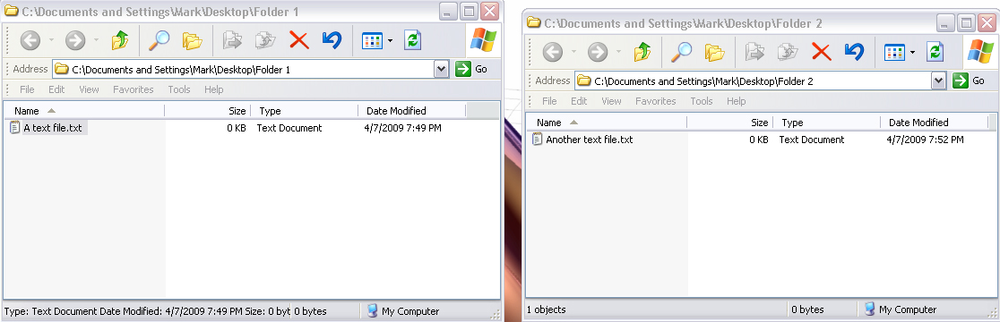
Instead of using Copy and Paste to move a file from one directory to
another, you can click on a file and hold the mouse button down.
Then, when you move the mouse, you see a little ghost image moving
with the cursor.
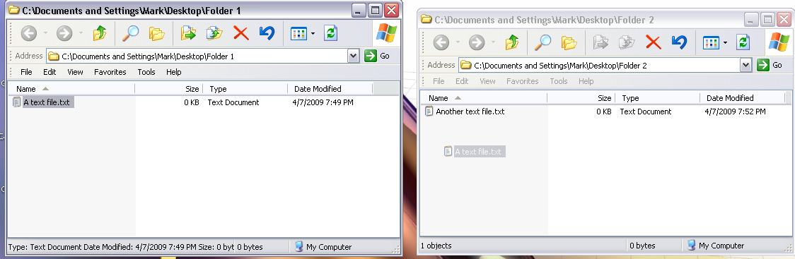
When you release the mouse key in the destination directory, the file moves.
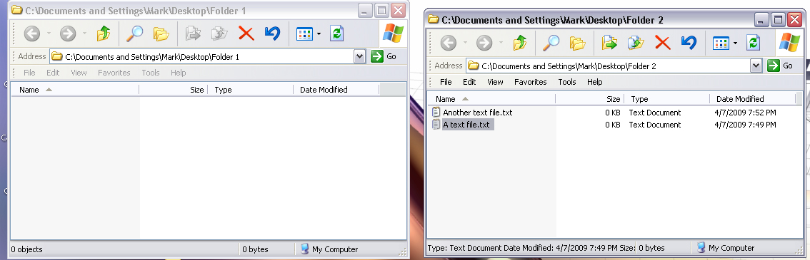
Easy, right? Dragging and dropping in the VPL works much the same way.
Let's say in the VPL we want to move the + box, with all its current
arguments, into the argument of the ABS box labeled 'number'.
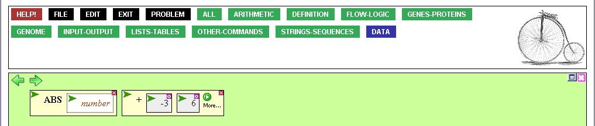
One option would be to cut the + box and paste it into the hole of the ABS box.
But instead, we can now use Drag n Drop. Click inside the + box
and hold down the mouse button.
Notice how, just like when moving files between Windows directories,
a ghost image appears.
Also note the mode line, which now says "Dragging +"...this is
the "Drag" part of Drag n Drop.
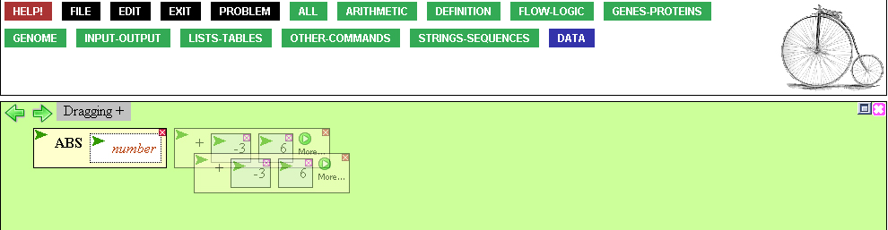
We can move this ghost image of the + box into the hole of the ABS box.
Notice how, as the ghost image gets close to ABS's hole, two red lines
appear around the hole. This tells that you can release the mouse button.
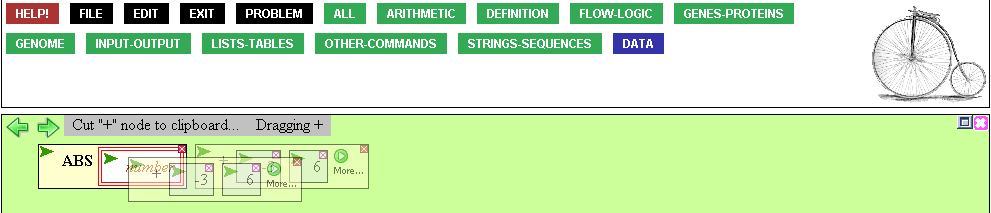
When the mouse button is released, the + box becomes the argument to ABS.
This is the "Drop" part of Drag n Drop. Again, note the mode line which says
"Dropped + on number". The 'number' in this case is the name of ABS's argument
hole, as mentioned above.
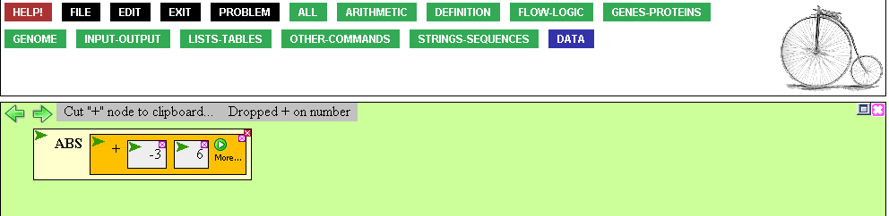
And that's it! We think this makes it a lot easier to get things
done in the VPL. You might think that you can only do this in the workspace,
but in fact, you can just as easily move result boxes from the results area
into a function. This might seem easier than cutting and pasting or using the
RESULT function.
Moving a box from the results area is just like moving it in the palette,
except that the original box remains. So, even though you are essentially
dragging a copy of the box, you can still drop it anywhere just fine.
First, click the box, keeping the mouse button held down. Notice the
mode line says "Dragging 1>", indicating we are dragging the result box
labeled 1.
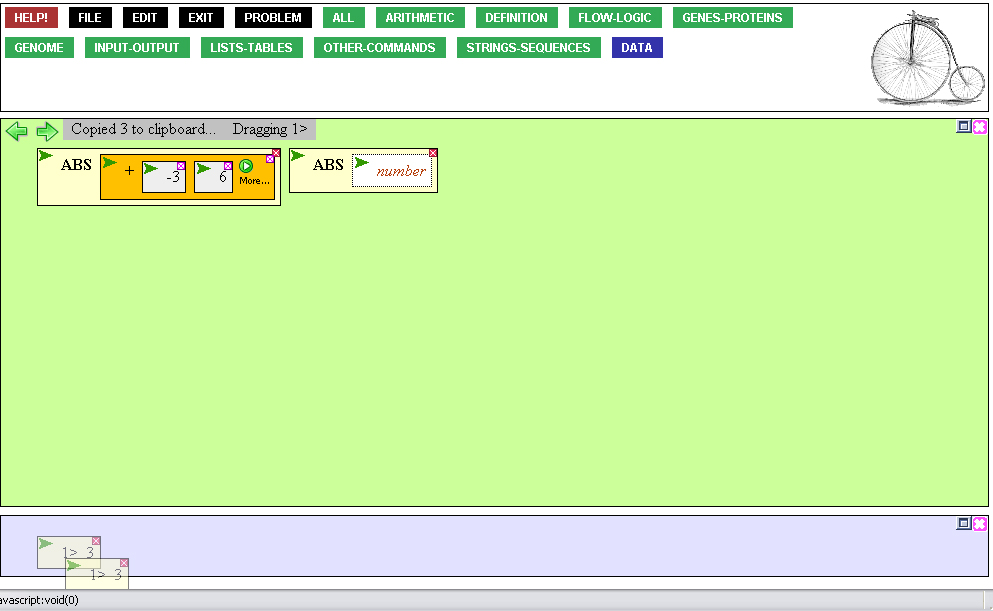
You can drop this function into the empty ABS box, like this:
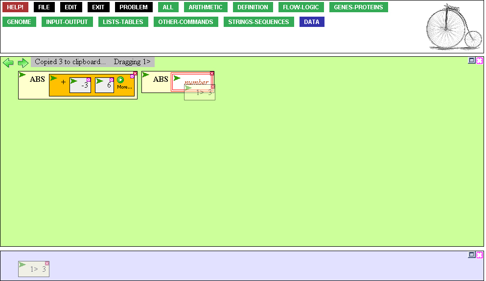
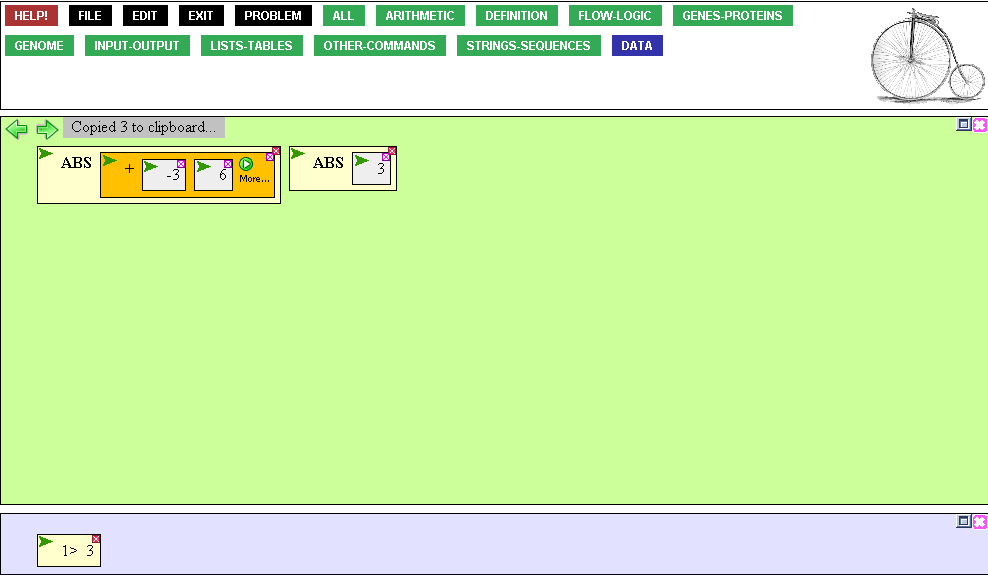
You can also just drag the box to the top level. Notice that when you do this,
a red line appears to tell you that it is OK to release the mouse button.
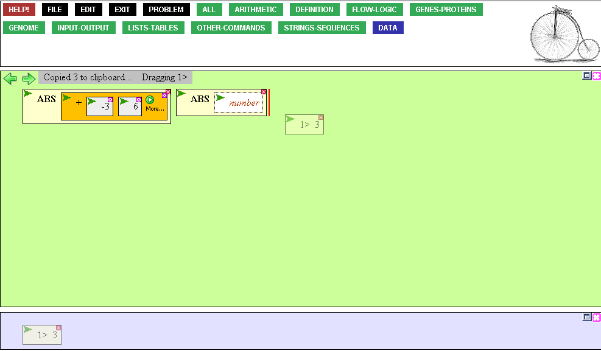
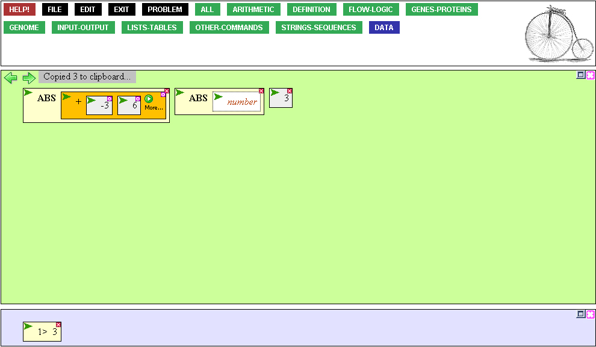
And that's it! We hope you find this feature useful.